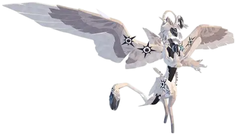

10 цікавих фактів про ангеліка
- Інша назва – Serphelius: У канонічній історії Angelic Warden відомий також як Serphelius і вважається творцем Opralegion
- Майстер балансу життя: Його призначення – підтримувати баланс життя серед всіх істот на Sonaria та приносити надію для тих, хто літає, ходить чи плаває
- Унікальна здатність перевтілення: Angelic Warden може перероджувати істот, стираючи їхні спогади та повертаючи їх у стан дитинчати
- Перший літаючий і м'ясоїдний Warden: Це перший Warden з крилами та другий двоногий Warden. Також він був першим м'ясоїдним Warden
- Використовує предмет для атаки: В атаках Angelic Warden застосовує особливий об’єкт – магічну кулю, що робить його бої візуально унікальними
- На відміну від наземних Вартових, його крила дозволяють гравцям домінувати в повітрі, досліджуючи карту Sonaria з висоти пташиного польоту.
- Хоча в оригінальній версії (Legacy) він був страшенно потужним, у сучасній грі його бойові характеристики вважаються більш збалансованими.
- Ця істота є культовою — мати Angelic Warden у своєму слоті вважається показником високого статусу серед гравців.
- Зовнішній вигляд істоти натхненний темами божественності, ангелів та світлої магії.
- За легендою, цей страж має унікальну здатність відроджувати інших істот.

Перейти на іншу сторінку